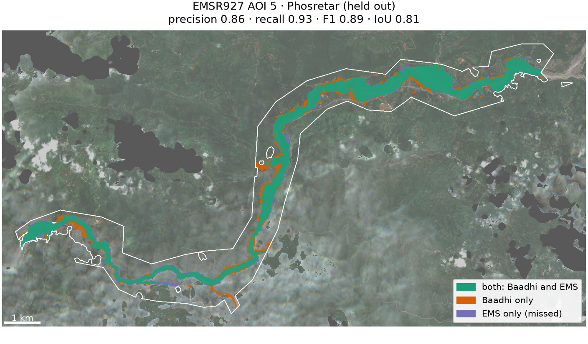
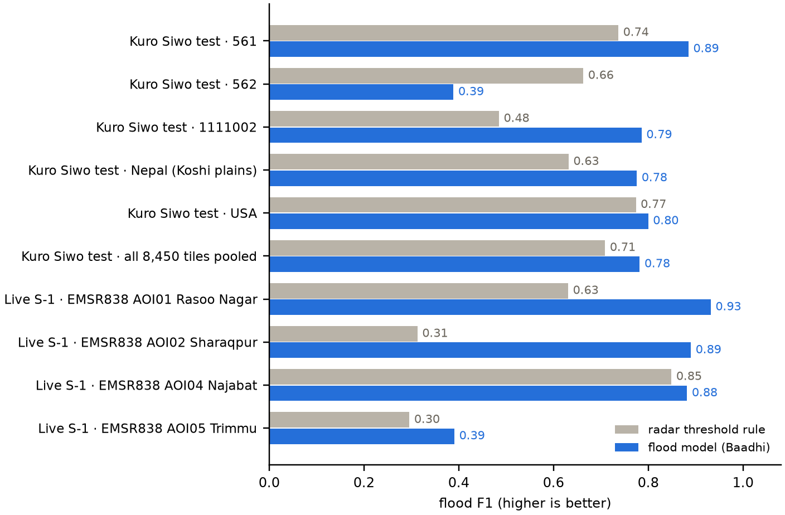

A glacial-lake outburst or monsoon flood destroys roads and bridges in narrow valleys within hours; responders need to know where the water and debris went, what it hit, and who is now cut off from care. The system must do this for an area and date chosen live by the judges, using only open satellite data and the map as it was before the event.
| Question | Evidence | Output |
|---|---|---|
| Where did flood and debris hit? | Sentinel-1 before/after on every usable orbit track; Sentinel-2 when clear; flood model; DEM terrain rules | classes flood water · debris/mud/scoured ground · affected channel, confidence |
| What was damaged? | overlay on OpenStreetMap at event − 2 days, 00:00 UTC | buildings hit / at the edge, blocked road stretches, bridges over an affected reach, health facilities |
| Who is cut off? | road graph before vs after (network 25 km beyond the area), walking paths separately | per settlement: minutes to the nearest hospital/clinic and town, before and after |
| Bonus: where would a flood go? | steepest descent on Copernicus DEM, continued across windows | path and settlements, km downstream, height above the river |
Inputs: Sentinel-1 RTC (γ⁰), Sentinel-2 L2A and Copernicus DEM GLO-30/90 from Microsoft Planetary Computer; OpenStreetMap
as it was before the event (Overpass "attic" query, two days before the event date at 00:00 UTC — EMSR927 began on
25 Aug 22:00 UTC; if that server is slow, the newest dated Geofabrik regional snapshot from before the event, cut out locally); Kuro Siwo for training only. Copernicus EMS, UNOSAT and other published flood maps are never
inputs: EMSR927 and EMSR838 are used only to score results, in code under experiments/ that the system never
imports. No detector threshold was fitted to EMS maps (section 7).
U-Net with a ResNet-18 encoder (12.5 M parameters), trained from scratch on Kuro Siwo only — no ImageNet weights, so no data outside the allowed lists — on a laptop CPU. Input: 8 channels (VV and VH after and before, their differences, slope, height above the local valley floor); output: no water / permanent water / flood water. Official Kuro Siwo event splits: 23 training events, 11 validation events (four training events from different climates moved to validation), official test events never seen (including Nepal, 1111007). Loss: weighted cross-entropy + Dice on flood; random crops, rotations, flips, independent calibration offsets on the before/after images; weight averaging (EMA).
Making live data look like the training data. Kuro Siwo is σ⁰ with a Lee filter; Planetary Computer gives
terrain-flattened γ⁰ without filtering. Live images are converted (σ⁰ ≈ γ⁰·cos θ, incidence from the swath geometry)
and Lee-filtered, then the same feature code as in training runs (baadhi/ml/features.py). Inference uses
512-pixel windows blended at the seams, averaged with the mirror image; per pixel, the highest probability among tracks
that see it properly. The model is exported to ONNX and run with onnxruntime (identical output, 1.6× faster than PyTorch;
the dashboard does not need PyTorch).
Buildings are rasterised on the 10 m grid: ≥ 50 % inside the footprint = hit, touching it = at the edge. A road is blocked where ≥ 20 m of it runs continuously under water or debris; bridges within 30 m of an affected reach are at risk. Access: an undirected road graph with class speeds (trunk 50 km/h … track 12 km/h), multi-source Dijkstra from all hospitals/clinics and towns (including those up to 25 km outside the area) before and after removing blocked stretches and at-risk bridges; a settlement is cut off if it loses its route, a long detour if the time doubles and grows ≥ 30 min. Footpaths are walked at 3 km/h to tell whether a cut-off village can still be reached on foot. The flood path follows D8 directions on GLO-90 and lists named places ≤ 400 m from the path and ≤ 60 m above the river.
EMSR927 areas 1–3 were used while developing the detector; area 5 (Phosretar) was held out of its tuning. The scores are for the deployed system — physical rules plus the flood model, which never saw EMSR927 or any other EMS map — with OpenStreetMap as of 24 Aug 2026, computed inside each EMS area of interest and excluding what EMS marked "not analysed".
| Area | Precision | Recall | F1 | IoU | EMS damaged buildings we flag | Damaged road length in footprint | Damaged bridges flagged / in OSM |
|---|---|---|---|---|---|---|---|
| AOI 1–2 Syabru Bensi–Timure dev | 0.99 | 0.82 | 0.90 | 0.82 | 94 % | 87 % | 5 / 5 |
| AOI 3 Bidur dev | 0.95 | 0.90 | 0.92 | 0.86 | 95 % | 85 % | 20 / 20 |
| AOI 5 Phosretar held out | 0.86 | 0.93 | 0.89 | 0.81 | 80 % | 77 % | 30 / 30 |
The rule-only detector (no flood model) scored F1 0.89 and 0.92 on the development areas and — on Phosretar, which we looked at in that form first — 0.86 (precision 0.97, recall 0.77; buildings 63 %, roads 55 %, bridges 24 / 30). The flood model adds recall in the wide, braided reach at Phosretar at some cost in precision. Without any OpenStreetMap (rivers taken from the terrain only) the map still scores F1 0.89 at Bidur and 0.90 at Phosretar, but counts no buildings, roads or settlements.

Buildings: in the upper valley EMS graded 760 buildings damaged or destroyed; 94 % of them lie in or at the edge of our footprint. "Precision" of building flags (our hit buildings with an EMS-graded point within 15 m) is 82 % upper, 86 % Bidur and 52 % Phosretar — a rough proxy, since EMS graded only what it could see in very-high-resolution images. Access: in the upper valley 22 settlements lose their road link to the nearest hospital or town — Syabru Bensi had a clinic 24 minutes away before the event and none by road after.
Checking the cut-off analysis. The same routing was run twice on the same pre-event road network: once with roads cut by our footprint, once with roads cut where EMS graded them destroyed or damaged (both limited to the EMS areas). Every settlement's status (cut off / long detour / connected) was compared:
| Area | Same status | Cut off: ours / EMS-based |
|---|---|---|
| AOI 1–2 Syabru Bensi–Timure dev | 30 / 30 (100 %) | 22 / 22 |
| AOI 3 Bidur dev | 89 / 89 (100 %) | 5 / 5 (and 33 / 33 long detours) |
| AOI 5 Phosretar held out | 93 / 101 (92 %) | 13 (+6 "possibly") / 17 (11 in both) |
In the held-out area EMS-based routing cuts off 17 settlements: we call 11 of them cut off and flag the other 6 as "possibly cut off — verify" (all 17 are flagged one way or the other), and EMS-based routing still finds a road for 2 settlements that we call cut off. 23 % of the road length EMS graded damaged lies outside our footprint.
Which checkpoint. The rule, fixed before any evaluation, was to deploy the final epoch (30 of 30, averaged weights). Validation flood F1 peaks early (0.662 at epoch 2) and then stays within 0.647–0.662, while the IoU of "any water after the event" keeps rising (0.65 → 0.71) and so does the IoU of the permanent-water class (0.29 → 0.36), so training was not stopped early. The best-validation checkpoint (epoch 2) is shown for comparison.
Kuro Siwo official test events (never seen; 8,450 tiles from five events) — flood F1:
| Event | Tiles | Rule | Model | Epoch 2 |
|---|---|---|---|---|
| 561 | 38 | 0.74 | 0.89 | 0.88 |
| 562 | 67 | 0.66 | 0.39 | 0.43 |
| 1111002 | 27 | 0.49 | 0.79 | 0.67 |
| 1111007 Nepal (Koshi plains) | 2,318 | 0.63 | 0.78 | 0.76 |
| 1111013 USA | 6,000 | 0.77 | 0.80 | 0.71 |
| All, pooled | 8,450 | 0.71 | 0.78 | 0.73 |
On event 562 the model labels 70 % of the flood pixels as permanent water (the before-images already showed water), so it misses most of the flood: F1 0.39 against 0.66 for the rule. The rule is scored with permanent water counted as "not flood", the easier case for it.
Live Sentinel-1, EMSR838 Punjab floods (Aug 2025). For each EMS area we take the ~14 km box with the most mapped flooding, use exactly the Sentinel-1 pass EMS mapped from, before-images from before the flood began, and score inside the EMS area only.
| EMSR838 area | EMS flood | Rule F1 | Model F1 | Epoch 2 |
|---|---|---|---|---|
| AOI01 Rasoo Nagar | 143 km² | 0.63 | 0.93 | 0.95 |
| AOI02 Sharaqpur | 65 km² | 0.31 | 0.89 | 0.91 |
| AOI04 Najabat | 26 km² | 0.85 | 0.88 | 0.90 |
| AOI05 Trimmu | 9 km² | 0.30 | 0.39 | 0.46 |
| Mean | 0.52 | 0.77 | 0.80 |
Trimmu is a braided river: 317 flood patches with a median of 80 m², many at the scale of a pixel; the monsoon before-images already held water in many braids, which the model then calls permanent rather than new flood water.

The dashboard (FastAPI + MapLibre, python serve.py) takes an area drawn on the map and a date, streams progress,
and shows the classes, confidence and model probability, Sentinel-2 before/after and a radar change composite, buildings,
blocked roads, bridges, health facilities and settlements by access status; clicking a settlement shows its travel times.
Each run produces the one-page situation report (HTML/PDF, every number from the maps), GeoTIFFs and GeoJSON layers.
Timings measured on this laptop (10-core CPU, no GPU), pipeline time without the report (about 10–15 s more): a new
16 × 14 km area (Silchar 2022) took 221 s from a cold start — radar and optical downloads about 2 min, pre-event OpenStreetMap
115 s from the public history server, the rest compute. With the downloads cached the case-study areas run in 70 s (upper valley), 106 s (Bidur)
and 92 s (Phosretar); Wayanad 2024 in 108 s. In dense areas the Overpass history server is the bottleneck (Bidur 638 s, Phosretar 876 s measured, even
with requests hedged over its three official instances); after 45 s without an answer the system therefore cuts the area out of a Geofabrik
snapshot from before the event in three low-priority worker processes (275 s for a 55 × 55 km cell the first time, instant afterwards) and uses
whichever source answers first. If neither answers in 10 minutes it still delivers the flood map and says that damage and access were not computed.
Contains modified Copernicus Sentinel data 2025–2026, processed by Microsoft Planetary Computer. Copernicus DEM: produced using Copernicus WorldDEM-30 © DLR e.V. 2010–2014 and © Airbus Defence and Space GmbH 2014–2018 provided under COPERNICUS by the European Union and ESA; all rights reserved. © OpenStreetMap contributors (ODbL), pre-event snapshots via the Overpass API and Geofabrik regional extracts. Kuro Siwo — N. I. Bountos et al., NeurIPS 2024 Datasets and Benchmarks (CC BY 4.0). Checking only: Copernicus Emergency Management Service © European Union (EMSR927, EMSR838). Basemap © OpenFreeMap © OpenMapTiles. MapLibre GL JS (BSD-3-Clause).